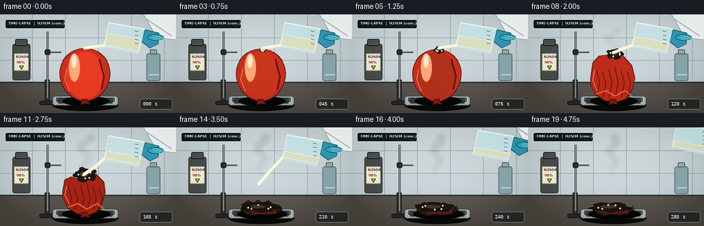
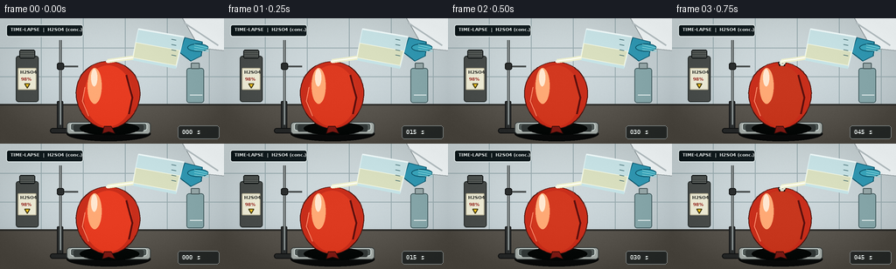
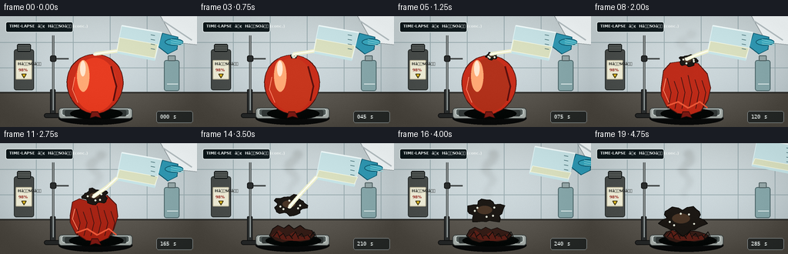

CODING AGENTS AS PIXEL WORLD MODELS
traex/GPT-5.6-Sol · material_0040
点击播放 · 原生 RGB 像素
逐轮保存的候选
回放视频、检查图与代码变化。
每份候选均可单独播放。实际图片检查记录在下方工具轨迹中。
候选 01播放与检查图
点击播放 · 原生 RGB 像素

展开代码变化
--- 上一保存版本
+++ 本次保存版本
@@ -0,0 +1,244 @@
+from pathlib import Path
+import math
+import numpy as np
+from PIL import Image, ImageDraw, ImageFont, ImageFilter
+import artifact_io
+
+W,H,N,S = 256,144,20,3
+OUT = Path(__file__).resolve().parent
+rng_global=np.random.default_rng(20261110)
+
+def F(size, bold=False):
+ p='/usr/share/fonts/truetype/dejavu/DejaVuSans-Bold.ttf' if bold else '/usr/share/fonts/truetype/dejavu/DejaVuSans.ttf'
+ return ImageFont.truetype(p, size*S)
+
+def scp(points): return [(int(x*S),int(y*S)) for x,y in points]
+def box(b): return tuple(int(x*S) for x in b)
+
+def ell(d,b,fill,outline=None,width=1): d.ellipse(box(b),fill=fill,outline=outline,width=width*S)
+def line(d,pts,fill,width=1,joint='curve'): d.line(scp(pts),fill=fill,width=max(1,width*S),joint=joint)
+def poly(d,pts,fill,outline=None): d.polygon(scp(pts),fill=fill); outline and d.line(scp(pts+[pts[0]]),fill=outline,width=S,joint='curve')
+def rect(d,b,fill,outline=None,width=1,r=0):
+ if r: d.rounded_rectangle(box(b),radius=r*S,fill=fill,outline=outline,width=width*S)
+ else: d.rectangle(box(b),fill=fill,outline=outline,width=width*S)
+
+def balloon_outline(t):
+ # inflated phase transitions to a slumped, chemically damaged rubber shell
+ if t < .34:
+ u=t/.34
+ cx=123.5; cy=88+u*1.0; rx=36.5-u*1.5; ry=38.5-u*1.0
+ pts=[]
+ for k in range(96):
+ a=2*math.pi*k/96
+ x=cx+rx*math.cos(a)*(1-.05*math.sin(a))
+ y=cy+ry*math.sin(a)
+ # localized acid dent at crown
+ dent=max(0,1-abs((a+math.pi/2)%(2*math.pi)-math.pi)/.34)
+ y += max(0,u-.38)*5*dent
+ pts.append((x,y))
+ return pts
+ elif t < .7:
+ u=(t-.34)/.36
+ # lopsided collapsing balloon, crown folds inward
+ key=[(91,92+3*u),(94,68+13*u),(103,55+26*u),(115,51+37*u),(127,53+27*u),
+ (139,58+15*u),(151,72+12*u),(157-6*u,92+5*u),(154-9*u,108+5*u),
+ (144-5*u,123),(129,128),(112,126),(98,117),(91,103)]
+ # interpolate perimeter smoothly with rounded line approximation
+ return key
+ else:
+ u=(t-.7)/.3
+ return [(94,120),(98,111+4*u),(105,106+7*u),(113,110+5*u),(119,105+9*u),
+ (126,111+3*u),(134,106+8*u),(140,111+4*u),(149,113+5*u),(153,120),
+ (146,126),(134,128),(123,126),(111,129),(101,126)]
+
+def gradient_background(frame):
+ yy,xx=np.mgrid[0:H*S,0:W*S]
+ # cool laboratory tiles with a warm bench
+ arr=np.empty((H*S,W*S,3),dtype=np.float32)
+ upper=yy<99*S
+ base=np.stack([214-18*yy/(H*S),224-16*yy/(H*S),226-13*yy/(H*S)],axis=-1)
+ arr[:]=base
+ arr[~upper]=np.stack([np.full_like(xx,95),np.full_like(xx,91),np.full_like(xx,84)],axis=-1)[~upper]
+ # subtle vignette and film grain
+ v=((xx-W*S/2)/(W*S/2))**2+((yy-H*S/2)/(H*S/2))**2
+ arr-=np.clip(v[...,None]*12,0,14)
+ rr=np.random.default_rng(700+frame)
+ arr+=rr.normal(0,1.25,arr.shape[:2])[...,None]
+ return Image.fromarray(np.uint8(np.clip(arr,0,255)),'RGB')
+
+def draw_background(im):
+ d=ImageDraw.Draw(im,'RGBA')
+ # ceramic grout grid
+ for x in [47,95,143,191,239]: line(d,[(x,0),(x,99)],(154,172,176,70),1)
+ for y in [34,67]: line(d,[(0,y),(256,y)],(154,172,176,65),1)
+ line(d,[(0,99),(256,99)],(51,51,48,210),2)
+ # left reagent bottle, in background
+ rect(d,(18,43,44,96),(75,79,77,220),(43,49,48,220),1,3)
+ rect(d,(22,36,40,46),(42,48,47,255),(25,29,29,255),1,2)
+ for y in range(38,45,2): line(d,[(23,y),(39,y)],(118,122,118,90),1)
+ rect(d,(20.5,57,41.5,82),(239,237,215,240),(190,184,157,230),1,1)
+ d.text((23*S,59*S),'HâSOâ',font=F(5,True),fill=(35,37,34,255))
+ d.text((24*S,67*S),'98%',font=F(5,True),fill=(148,35,28,255))
+ poly(d,[(28,75),(34,75),(31,80)],(245,197,34,255),(75,66,25,255))
+ # utility bottles / glassware to right, blurred in context
+ rect(d,(213,57,233,97),(137,169,172,65),(75,101,104,100),1,3)
+ rect(d,(218,51,228,58),(153,170,171,80),(74,91,93,100),1,1)
+ line(d,[(217,88),(231,88)],(236,245,245,70),1)
+ # retort stand and clamp behind specimen
+ rect(d,(65,95,72,129),(49,52,52,255),(24,26,27,255),1,1)
+ line(d,[(69,25),(69,122)],(62,67,67,255),3)
+ line(d,[(69,25),(69,122)],(181,190,190,180),1)
+ rect(d,(57,126,83,132),(43,45,45,255),(23,24,24,255),1,3)
+ line(d,[(69,55),(89,55)],(73,78,78,255),2)
+ rect(d,(65,51,73,59),(45,48,48,255),(22,24,24,255),1,2)
+ # label banner
+ rect(d,(7,7,95,21),(24,34,37,205),(230,239,239,120),1,3)
+ d.text((12*S,10*S),'TIME-LAPSE ⢠HâSOâ (conc.)',font=F(5,True),fill=(241,246,245,255))
+ # bench reflection and tray shadow
+ ell(d,(76,124,172,141),(15,16,16,95))
+ rect(d,(76,119,172,133),(167,174,170,255),(61,67,66,255),1,4)
+ rect(d,(80,120,168,129),(86,95,93,255),(214,224,221,170),1,3)
+ rect(d,(84,122,164,130),(54,60,59,255),None,1,2)
+
+def draw_balloon(im,idx):
+ t=idx/(N-1)
+ d=ImageDraw.Draw(im,'RGBA')
+ pts=balloon_outline(t)
+ # shadow beneath balloon changes with collapse
+ collapse=max(0,(t-.34)/.66)
+ ell(d,(91-3*collapse,119,159+4*collapse,134),(9,12,11,int(85+50*collapse)))
+ # rubber body base
+ if t<.72:
+ # red-orange rubber darkens strongly near the reaction
+ base=(201-int(92*collapse),47-int(30*collapse),28-int(18*collapse),255)
+ poly(d,pts,base,(77,23,18,255))
+ # internal soft shading masks clipped approximately with nested shapes
+ if t<.34:
+ u=t/.34
+ ell(d,(96,54+u,151,124),(232-int(70*u),61-int(15*u),34-int(9*u),85))
+ ell(d,(100,57,116,98),(255,170,118,75))
+ ell(d,(104,58,111,78),(255,232,209,120))
+ line(d,[(144,65),(151,91),(147,110)],(91,16,14,70),2)
+ else:
+ # wrinkled folds of collapsing rubber
+ for j in range(6):
+ x=99+j*9
+ y0=78+4*math.sin(j*1.7)+20*collapse
+ line(d,[(x,y0),(x+5,97+18*collapse),(x+1,120)],(72,22,18,130),1)
+ line(d,[(99,116),(113,111),(126,119),(141,111),(151,119)],(239,92,59,70),2)
+ else:
+ poly(d,pts,(55,31,25,255),(19,16,14,255))
+ # remnants retain a little scorched red color
+ poly(d,[(97,120),(106,113),(116,121),(126,115),(136,122),(148,118),(146,125),(130,127),(114,126)],(92,34,26,220))
+ for j in range(7):
+ x=99+j*8
+ line(d,[(x,121),(x+5,115+(j%3)*2),(x+9,124)],(18,17,15,210),1)
+ # neck/knot at bottom, gradually flattened
+ if t<.68:
+ poly(d,[(119,124),(127,124),(131,132),(124,130),(117,132)],(128,30,24,255),(64,18,15,255))
+ # acid contact / charred lesion expands from crown
+ onset=max(0,(t-.12)/.88)
+ if onset>0:
+ cx=123+4*math.sin(t*5)
+ cy=52+collapse*48
+ rx=3+24*onset; ry=2+15*onset
+ # irregular black lesion
+ p=[]
+ for k in range(28):
+ a=2*math.pi*k/28
+ jitter=1+.15*math.sin(5*a+idx)+.09*math.sin(9*a)
+ p.append((cx+rx*jitter*math.cos(a),cy+ry*jitter*math.sin(a)))
+ poly(d,p,(29,25,21,225),(15,14,12,230))
+ ell(d,(cx-rx*.5,cy-ry*.5,cx+rx*.35,cy+ry*.25),(74,54,39,160))
+ # shiny acid beads and tiny pale fizz
+ for q in range(5):
+ a=q*2.3+idx*.45
+ bx=cx+math.cos(a)*rx*.65; by=cy+math.sin(a)*ry*.5
+ ell(d,(bx-1,by-1,bx+1.3,by+1.3),(225,229,213,190))
+ # specular rim remains
+ if t<.6:
+ line(d,[(97,79+18*collapse),(94,95+10*collapse),(101,112)],(255,145,112,80),1)
+
+def draw_smoke(im,idx):
+ t=idx/(N-1)
+ if t<.25: return
+ layer=Image.new('RGBA',im.size,(0,0,0,0)); d=ImageDraw.Draw(layer,'RGBA')
+ strength=min(1,(t-.25)/.35)
+ # wispy dark/white sulfuric mist rising from reaction
+ for j in range(14):
+ phase=j*.91+idx*.18
+ y=87-j*4.2-18*strength
+ x=124+math.sin(phase)* (3+j*.45) + math.sin(idx*.27+j)*2
+ r=(2.2+j*.20)*S
+ color=(170,172,164,int((22+4*j)*strength)) if j%3 else (52,50,46,int(24*strength))
+ d.ellipse((int(x*S-r),int(y*S-r*.65),int(x*S+r),int(y*S+r*.65)),fill=color)
+ layer=layer.filter(ImageFilter.GaussianBlur(3.0*S))
+ im.alpha_composite(layer)
+
+def draw_pour_and_hand(im,idx):
+ t=idx/(N-1)
+ d=ImageDraw.Draw(im,'RGBA')
+ # hand withdraws only at end; pour ends earlier
+ withdraw=max(0,(t-.72)/.28)
+ dx=withdraw*58; dy=-withdraw*18
+ # sleeve
+ poly(d,[(204+dx,-8+dy),(267+dx,-4+dy),(266+dx,38+dy),(228+dx,34+dy)],(242,247,248,255),(145,155,158,255))
+ line(d,[(210+dx,5+dy),(249+dx,31+dy)],(184,194,197,170),2)
+ # cyan nitrile glove gripping the beaker
+ poly(d,[(211+dx,22+dy),(231+dx,27+dy),(230+dx,43+dy),(218+dx,49+dy),(205+dx,39+dy)],(53,154,180,255),(20,91,112,255))
+ ell(d,(214+dx,29+dy,238+dx,38+dy),(62,169,191,255),(20,91,112,255))
+ for k in range(3):
+ line(d,[(222+dx,30+k*3+dy),(238+dx,34+k*2+dy)],(142,220,227,110),1)
+ # tilted beaker body (clear borosilicate), with lip at left bottom
+ bp=[(158+dx,12+dy),(210+dx,21+dy),(201+dx,57+dy),(151+dx,47+dy)]
+ poly(d,bp,(202,229,232,72),(225,244,246,230))
+ line(d,[(158+dx,12+dy),(210+dx,21+dy)],(242,252,252,255),2)
+ line(d,[(151+dx,47+dy),(201+dx,57+dy)],(199,229,232,220),2)
+ # clear acid volume meniscus; recedes as pouring
+ level=max(.18,.78-t*.68)
+ acid_y=24+(1-level)*17
+ poly(d,[(155+dx,acid_y+dy),(205+dx,acid_y+9+dy),(201+dx,54+dy),(152+dx,45+dy)],(220,226,194,90),(246,248,226,100))
+ line(d,[(155+dx,acid_y+dy),(205+dx,acid_y+9+dy)],(247,250,231,170),1)
+ # graduations
+ for k in range(4):
+ y=24+k*6
+ line(d,[(196+dx,y+dy),(201+dx,y+1+dy)],(63,105,111,170),1)
+ # acid stream from lip to the balloon, active frames 0..14 and moving contact lower as collapse
+ if idx<=14:
+ collapse=max(0,(t-.34)/.66)
+ x0=152+dx; y0=45+dy
+ x1=123+3*math.sin(idx*.33); y1=49+collapse*56
+ # luminous transparent fluid stream, slight wavering
+ mid=((x0+x1)/2+math.sin(idx*.7)*2,(y0+y1)/2)
+ line(d,[(x0,y0),mid,(x1,y1)],(238,240,206,110),5)
+ line(d,[(x0,y0),mid,(x1,y1)],(250,252,232,225),2)
+ line(d,[(x0-1,y0),mid,(x1-1,y1)],(255,255,255,150),1)
+ ell(d,(x1-2,y1-1,x1+2,y1+2),(248,250,229,180))
+
+def add_finish(im,idx):
+ # lens vignette, grain, fixed timestamp cue
+ arr=np.asarray(im.convert('RGB')).astype(np.float32)
+ yy,xx=np.mgrid[0:H*S,0:W*S]
+ vig=np.clip((((xx-W*S/2)/(W*S/2))**2+((yy-H*S/2)/(H*S/2))**2)*9,0,14)
+ arr-=vig[...,None]
+ rr=np.random.default_rng(1234+idx)
+ arr+=rr.normal(0,.8,arr.shape[:2])[...,None]
+ out=Image.fromarray(np.uint8(np.clip(arr,0,255))).resize((W,H),Image.Resampling.LANCZOS)
+ d=ImageDraw.Draw(out,'RGBA')
+ # tiny timelapse clock readout
+ d.rounded_rectangle((203,123,250,138),radius=3,fill=(18,24,25,175),outline=(232,240,240,95),width=1)
+ d.text((208,126),f'{idx*15:03d} s',font=ImageFont.truetype('/usr/share/fonts/truetype/dejavu/DejaVuSansMono.ttf',7),fill=(236,243,241,255))
+ return out
+
+frames=[]
+for i in range(N):
+ im=gradient_background(i).convert('RGBA')
+ draw_background(im)
+ draw_balloon(im,i)
+ draw_smoke(im,i)
+ draw_pour_and_hand(im,i)
+ im=add_finish(im,i)
+ frames.append(np.asarray(im,dtype=np.uint8))
+frames=np.stack(frames)
+artifact_io.save(frames,OUT)
+print('saved',frames.shape,frames.dtype)
候选 02播放与检查图
点击播放 · 原生 RGB 像素


展开代码变化
--- 上一保存版本
+++ 本次保存版本
@@ -77,7 +77,7 @@
rect(d,(22,36,40,46),(42,48,47,255),(25,29,29,255),1,2)
for y in range(38,45,2): line(d,[(23,y),(39,y)],(118,122,118,90),1)
rect(d,(20.5,57,41.5,82),(239,237,215,240),(190,184,157,230),1,1)
- d.text((23*S,59*S),'HâSOâ',font=F(5,True),fill=(35,37,34,255))
+ d.text((23*S,59*S),'H2SO4',font=F(5,True),fill=(35,37,34,255))
d.text((24*S,67*S),'98%',font=F(5,True),fill=(148,35,28,255))
poly(d,[(28,75),(34,75),(31,80)],(245,197,34,255),(75,66,25,255))
# utility bottles / glassware to right, blurred in context
@@ -93,7 +93,7 @@
rect(d,(65,51,73,59),(45,48,48,255),(22,24,24,255),1,2)
# label banner
rect(d,(7,7,95,21),(24,34,37,205),(230,239,239,120),1,3)
- d.text((12*S,10*S),'TIME-LAPSE ⢠HâSOâ (conc.)',font=F(5,True),fill=(241,246,245,255))
+ d.text((12*S,10*S),'TIME-LAPSE | H2SO4 (conc.)',font=F(5,True),fill=(241,246,245,255))
# bench reflection and tray shadow
ell(d,(76,124,172,141),(15,16,16,95))
rect(d,(76,119,172,133),(167,174,170,255),(61,67,66,255),1,4)
@@ -142,6 +142,11 @@
cx=123+4*math.sin(t*5)
cy=52+collapse*48
rx=3+24*onset; ry=2+15*onset
+ # After total collapse the reacted patch settles into the remains.
+ if t >= .70:
+ cy=116.5
+ rx=22+5*onset
+ ry=6.5
# irregular black lesion
p=[]
for k in range(28):
可观测工具轨迹
实际执行的命令与返回图片。
命令 1exit 0
/bin/bash -lc "cat prompt.txt && printf '\\n---RULES---\\n' && cat GENERATION_RULES.md && printf '\\n---SPEC---\\n' && cat task_spec.json"
命令 2exit 0
/bin/bash -lc "find . -maxdepth 2 -type f -printf '%p\\n' | sort | head -200"
命令 3exit 0
/bin/bash -lc "sed -n '1,240p' artifact_io.py"
命令 4exit 0
/bin/bash -lc "cat > generate.py <<'PY'
from pathlib import Path
import math
import numpy as np
from PIL import Image, ImageDraw, ImageFont, ImageFilter
import artifact_io
W,H,N,S = 256,144,20,3
OUT = Path(__file__).resolve().parent
rng_global=np.random.default_rng(20261110)
def F(size, bold=False):
p='/usr/share/fonts/truetype/dejavu/DejaVuSans-Bold.ttf' if bold else '/usr/share/fonts/truetype/dejavu/DejaVuSans.ttf'
return ImageFont.truetype(p, size*S)
def scp(points): return [(int(x*S),int(y*S)) for x,y in points]
def box(b): return tuple(int(x*S) for x in b)
def ell(d,b,fill,outline=None,width=1): d.ellipse(box(b),fill=fill,outline=outline,width=width*S)
def line(d,pts,fill,width=1,joint='curve'): d.line(scp(pts),fill=fill,width=max(1,width*S),joint=joint)
def poly(d,pts,fill,outline=None): d.polygon(scp(pts),fill=fill); outline and d.line(scp(pts+[pts[0]]),fill=outline,width=S,joint='curve')
def rect(d,b,fill,outline=None,width=1,r=0):
if r: d.rounded_rectangle(box(b),radius=r*S,fill=fill,outline=outline,width=width*S)
else: d.rectangle(box(b),fill=fill,outline=outline,width=width*S)
def balloon_outline(t):
# inflated phase transitions to a slumped, chemically damaged rubber shell
if t < .34:
u=t/.34
cx=123.5; cy=88+u*1.0; rx=36.5-u*1.5; ry=38.5-u*1.0
pts=[]
for k in range(96):
a=2*math.pi*k/96
x=cx+rx*math.cos(a)*(1-.05*math.sin(a))
y=cy+ry*math.sin(a)
# localized acid dent at crown
dent=max(0,1-abs((a+math.pi/2)%(2*math.pi)-math.pi)/.34)
y += max(0,u-.38)*5*dent
pts.append((x,y))
return pts
elif t < .7:
u=(t-.34)/.36
# lopsided collapsing balloon, crown folds inward
key=[(91,92+3*u),(94,68+13*u),(103,55+26*u),(115,51+37*u),(127,53+27*u),
(139,58+15*u),(151,72+12*u),(157-6*u,92+5*u),(154-9*u,108+5*u),
(144-5*u,123),(129,128),(112,126),(98,117),(91,103)]
# interpolate perimeter smoothly with rounded line approximation
return key
else:
u=(t-.7)/.3
return [(94,120),(98,111+4*u),(105,106+7*u),(113,110+5*u),(119,105+9*u),
(126,111+3*u),(134,106+8*u),(140,111+4*u),(149,113+5*u),(153,120),
(146,126),(134,128),(123,126),(111,129),(101,126)]
def gradient_background(frame):
yy,xx=np.mgrid[0:H*S,0:W*S]
# cool laboratory tiles with a warm bench
arr=np.empty((H*S,W*S,3),dtype=np.float32)
upper=yy<99*S
base=np.stack([214-18*yy/(H*S),224-16*yy/(H*S),226-13*yy/(H*S)],axis=-1)
arr[:]=base
arr[~upper]=np.stack([np.full_like(xx,95),np.full_like(xx,91),np.full_like(xx,84)],axis=-1)[~upper]
# subtle vignette and film grain
v=((xx-W*S/2)/(W*S/2))**2+((yy-H*S/2)/(H*S/2))**2
arr-=np.clip(v[...,None]*12,0,14)
rr=np.random.default_rng(700+frame)
arr+=rr.normal(0,1.25,arr.shape[:2])[...,None]
return Image.fromarray(np.uint8(np.clip(arr,0,255)),'RGB')
def draw_background(im):
d=ImageDraw.Draw(im,'RGBA')
# ceramic grout grid
for x in [47,95,143,191,239]: line(d,[(x,0),(x,99)],(154,172,176,70),1)
for y in [34,67]: line(d,[(0,y),(256,y)],(154,172,176,65),1)
line(d,[(0,99),(256,99)],(51,51,48,210),2)
# left reagent bottle, in background
rect(d,(18,43,44,96),(75,79,77,220),(43,49,48,220),1,3)
rect(d,(22,36,40,46),(42,48,47,255),(25,29,29,255),1,2)
for y in range(38,45,2): line(d,[(23,y),(39,y)],(118,122,118,90),1)
rect(d,(20.5,57,41.5,82),(239,237,215,240),(190,184,157,230),1,1)
d.text((23*S,59*S),'HâSOâ',font=F(5,True),fill=(35,37,34,255))
d.text((24*S,67*S),'98%',font=F(5,True),fill=(148,35,28,255))
poly(d,[(28,75),(34,75),(31,80)],(245,197,34,255),(75,66,25,255))
# utility bottles / glassware to right, blurred in context
rect(d,(213,57,233,97),(137,169,172,65),(75,101,104,100),1,3)
rect(d,(218,51,228,58),(153,170,171,80),(74,91,93,100),1,1)
line(d,[(217,88),(231,88)],(236,245,245,70),1)
# retort stand and clamp behind specimen
rect(d,(65,95,72,129),(49,52,52,255),(24,26,27,255),1,1)
line(d,[(69,25),(69,122)],(62,67,67,255),3)
line(d,[(69,25),(69,122)],(181,190,190,180),1)
rect(d,(57,126,83,132),(43,45,45,255),(23,24,24,255),1,3)
line(d,[(69,55),(89,55)],(73,78,78,255),2)
rect(d,(65,51,73,59),(45,48,48,255),(22,24,24,255),1,2)
# label banner
rect(d,(7,7,95,21),(24,34,37,205),(230,239,239,120),1,3)
d.text((12*S,10*S),'TIME-LAPSE ⢠HâSOâ (conc.)',font=F(5,True),fill=(241,246,245,255))
# bench reflection and tray shadow
ell(d,(76,124,172,141),(15,16,16,95))
rect(d,(76,119,172,133),(167,174,170,255),(61,67,66,255),1,4)
rect(d,(80,120,168,129),(86,95,93,255),(214,224,221,170),1,3)
rect(d,(84,122,164,130),(54,60,59,255),None,1,2)
def draw_balloon(im,idx):
t=idx/(N-1)
d=ImageDraw.Draw(im,'RGBA')
pts=balloon_outline(t)
# shadow beneath balloon changes with collapse
collapse=max(0,(t-.34)/.66)
ell(d,(91-3*collapse,119,159+4*collapse,134),(9,12,11,int(85+50*collapse)))
# rubber body base
if t<.72:
# red-orange rubber darkens strongly near the reaction
base=(201-int(92*collapse),47-int(30*collapse),28-int(18*collapse),255)
poly(d,pts,base,(77,23,18,255))
# internal soft shading masks clipped approximately with nested shapes
if t<.34:
u=t/.34
ell(d,(96,54+u,151,124),(232-int(70*u),61-int(15*u),34-int(9*u),85))
ell(d,(100,57,116,98),(255,170,118,75))
ell(d,(104,58,111,78),(255,232,209,120))
line(d,[(144,65),(151,91),(147,110)],(91,16,14,70),2)
else:
# wrinkled folds of collapsing rubber
for j in range(6):
x=99+j*9
y0=78+4*math.sin(j*1.7)+20*collapse
line(d,[(x,y0),(x+5,97+18*collapse),(x+1,120)],(72,22,18,130),1)
line(d,[(99,116),(113,111),(126,119),(141,111),(151,119)],(239,92,59,70),2)
else:
poly(d,pts,(55,31,25,255),(19,16,14,255))
# remnants retain a little scorched red color
poly(d,[(97,120),(106,113),(116,121),(126,115),(136,122),(148,118),(146,125),(130,127),(114,126)],(92,34,26,220))
for j in range(7):
x=99+j*8
line(d,[(x,121),(x+5,115+(j%3)*2),(x+9,124)],(18,17,15,210),1)
# neck/knot at bottom, gradually flattened
if t<.68:
poly(d,[(119,124),(127,124),(131,132),(124,130),(117,132)],(128,30,24,255),(64,18,15,255))
# acid contact / charred lesion expands from crown
onset=max(0,(t-.12)/.88)
if onset>0:
cx=123+4*math.sin(t*5)
cy=52+collapse*48
rx=3+24*onset; ry=2+15*onset
# irregular black lesion
p=[]
for k in range(28):
a=2*math.pi*k/28
jitter=1+.15*math.sin(5*a+idx)+.09*math.sin(9*a)
p.append((cx+rx*jitter*math.cos(a),cy+ry*jitter*math.sin(a)))
poly(d,p,(29,25,21,225),(15,14,12,230))
ell(d,(cx-rx*.5,cy-ry*.5,cx+rx*.35,cy+ry*.25),(74,54,39,160))
# shiny acid beads and tiny pale fizz
for q in range(5):
a=q*2.3+idx*.45
bx=cx+math.cos(a)*rx*.65; by=cy+math.sin(a)*ry*.5
ell(d,(bx-1,by-1,bx+1.3,by+1.3),(225,229,213,190))
# specular rim remains
if t<.6:
line(d,[(97,79+18*collapse),(94,95+10*collapse),(101,112)],(255,145,112,80),1)
def draw_smoke(im,idx):
t=idx/(N-1)
if t<.25: return
layer=Image.new('RGBA',im.size,(0,0,0,0)); d=ImageDraw.Draw(layer,'RGBA')
strength=min(1,(t-.25)/.35)
# wispy dark/white sulfuric mist rising from reaction
for j in range(14):
phase=j*.91+idx*.18
y=87-j*4.2-18*strength
x=124+math.sin(phase)* (3+j*.45) + math.sin(idx*.27+j)*2
r=(2.2+j*.20)*S
color=(170,172,164,int((22+4*j)*strength)) if j%3 else (52,50,46,int(24*strength))
d.ellipse((int(x*S-r),int(y*S-r*.65),int(x*S+r),int(y*S+r*.65)),fill=color)
layer=layer.filter(ImageFilter.GaussianBlur(3.0*S))
im.alpha_composite(layer)
def draw_pour_and_hand(im,idx):
t=idx/(N-1)
d=ImageDraw.Draw(im,'RGBA')
# hand withdraws only at end; pour ends earlier
withdraw=max(0,(t-.72)/.28)
dx=withdraw*58; dy=-withdraw*18
# sleeve
poly(d,[(204+dx,-8+dy),(267+dx,-4+dy),(266+dx,38+dy),(228+dx,34+dy)],(242,247,248,255),(145,155,158,255))
line(d,[(210+dx,5+dy),(249+dx,31+dy)],(184,194,197,170),2)
# cyan nitrile glove gripping the beaker
poly(d,[(211+dx,22+dy),(231+dx,27+dy),(230+dx,43+dy),(218+dx,49+dy),(205+dx,39+dy)],(53,154,180,255),(20,91,112,255))
ell(d,(214+dx,29+dy,238+dx,38+dy),(62,169,191,255),(20,91,112,255))
for k in range(3):
line(d,[(222+dx,30+k*3+dy),(238+dx,34+k*2+dy)],(142,220,227,110),1)
# tilted beaker body (clear borosilicate), with lip at left bottom
bp=[(158+dx,12+dy),(210+dx,21+dy),(201+dx,57+dy),(151+dx,47+dy)]
poly(d,bp,(202,229,232,72),(225,244,246,230))
line(d,[(158+dx,12+dy),(210+dx,21+dy)],(242,252,252,255),2)
line(d,[(151+dx,47+dy),(201+dx,57+dy)],(199,229,232,220),2)
# clear acid volume meniscus; recedes as pouring
level=max(.18,.78-t*.68)
acid_y=24+(1-level)*17
poly(d,[(155+dx,acid_y+dy),(205+dx,acid_y+9+dy),(201+dx,54+dy),(152+dx,45+dy)],(220,226,194,90),(246,248,226,100))
line(d,[(155+dx,acid_y+dy),(205+dx,acid_y+9+dy)],(247,250,231,170),1)
# graduations
for k in range(4):
y=24+k*6
line(d,[(196+dx,y+dy),(201+dx,y+1+dy)],(63,105,111,170),1)
# acid stream from lip to the balloon, active frames 0..14 and moving contact lower as collapse
if idx<=14:
collapse=max(0,(t-.34)/.66)
x0=152+dx; y0=45+dy
x1=123+3*math.sin(idx*.33); y1=49+collapse*56
# luminous transparent fluid stream, slight wavering
mid=((x0+x1)/2+math.sin(idx*.7)*2,(y0+y1)/2)
line(d,[(x0,y0),mid,(x1,y1)],(238,240,206,110),5)
line(d,[(x0,y0),mid,(x1,y1)],(250,252,232,225),2)
line(d,[(x0-1,y0),mid,(x1-1,y1)],(255,255,255,150),1)
ell(d,(x1-2,y1-1,x1+2,y1+2),(248,250,229,180))
def add_finish(im,idx):
# lens vignette, grain, fixed timestamp cue
arr=np.asarray(im.convert('RGB')).astype(np.float32)
yy,xx=np.mgrid[0:H*S,0:W*S]
vig=np.clip((((xx-W*S/2)/(W*S/2))**2+((yy-H*S/2)/(H*S/2))**2)*9,0,14)
arr-=vig[...,None]
rr=np.random.default_rng(1234+idx)
arr+=rr.normal(0,.8,arr.shape[:2])[...,None]
out=Image.fromarray(np.uint8(np.clip(arr,0,255))).resize((W,H),Image.Resampling.LANCZOS)
d=ImageDraw.Draw(out,'RGBA')
# tiny timelapse clock readout
d.rounded_rectangle((203,123,250,138),radius=3,fill=(18,24,25,175),outline=(232,240,240,95),width=1)
d.text((208,126),f'{idx*15:03d} s',font=ImageFont.truetype('/usr/share/fonts/truetype/dejavu/DejaVuSansMono.ttf',7),fill=(236,243,241,255))
return out
frames=[]
for i in range(N):
im=gradient_background(i).convert('RGBA')
draw_background(im)
draw_balloon(im,i)
draw_smoke(im,i)
draw_pour_and_hand(im,i)
im=add_finish(im,i)
frames.append(np.asarray(im,dtype=np.uint8))
frames=np.stack(frames)
artifact_io.save(frames,OUT)
print('saved',frames.shape,frames.dtype)
PY
python generate.py"命令 5exit 0
/bin/bash -lc "grep -n \"d.text\\|cx=123\" generate.py | head -15"
命令 6exit 0
/bin/bash -lc "python - <<'PY'
p='generate.py'
s=open(p).read()
lines=s.splitlines()
for i,l in enumerate(lines):
if \"d.text((23*S,59*S)\" in l: lines[i]=\" d.text((23*S,59*S),'H2SO4',font=F(5,True),fill=(35,37,34,255))\"
if \"d.text((12*S,10*S)\" in l: lines[i]=\" d.text((12*S,10*S),'TIME-LAPSE | H2SO4 (conc.)',font=F(5,True),fill=(241,246,245,255))\"
s='\\n'.join(lines)+'\\n'
old=''' cx=123+4*math.sin(t*5)\\n cy=52+collapse*48\\n rx=3+24*onset; ry=2+15*onset\\n'''
new=''' cx=123+4*math.sin(t*5)\\n cy=52+collapse*48\\n rx=3+24*onset; ry=2+15*onset\\n # After total collapse the reacted patch settles into the remains.\\n if t >= .70:\\n cy=116.5\\n rx=22+5*onset\\n ry=6.5\\n'''
assert old in s
open(p,'w').write(s.replace(old,new))
PY
python generate.py"命令 7exit 0
/bin/bash -lc "python - <<'PY'
from pathlib import Path
import numpy as np
p=Path('.')
a=np.load(p/'pixels.npz')['pixels']
print('pixels',a.shape,a.dtype,'frames',len(list((p/'frames').glob('*.png'))))
for f in ['generate.py','pixels.npz','index.html','inspection.png','transition_check.png']:
q=p/f; print(f,q.stat().st_size)
PY"视觉工具实际返回图片 1

视觉工具实际返回图片 2

保存候选 2 份；完成命令 7 次；可验证图片返回 2 张。原始 API 响应与完整日志保留在本地。